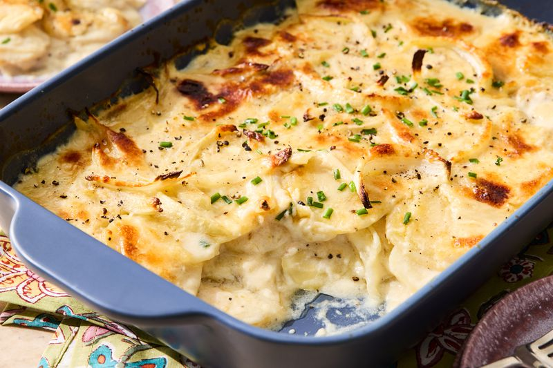

Home
Homemade Lasagna

Description
This is a classic homemade lasagna recipe that is perfect for family dinners or gatherings. It's rich, cheesy, and packed with flavor.
Ingredients
- 12 lasagna noodles
- 2 cups ricotta cheese
- 3 cups shredded mozzarella cheese
- 1 cup grated Parmesan cheese
- 1 pound ground beef
- 2 cups marinara sauce
- 1 egg
- 1 teaspoon Italian seasoning
- Salt and pepper to taste
- Fresh basil for garnish (optional)
Instructions
- Preheat the oven to 375°F (190°C).
- Cook the lasagna noodles according to package instructions.
- Heat a pan or skillet over medium heat. Add ground beef and cook until browned.
- Add marinara sauce, egg, Italian seasoning, salt, and pepper to the cooked ground beef.
- Layer the cooked noodles, ricotta cheese, mozzarella cheese, and Parmesan cheese on a baking sheet.
- Spread the marinara sauce over the top.
- Bake in the preheated oven for about 25 minutes or until the cheese is melted and bubbly.
- Garnish with fresh basil (optional) and serve hot.